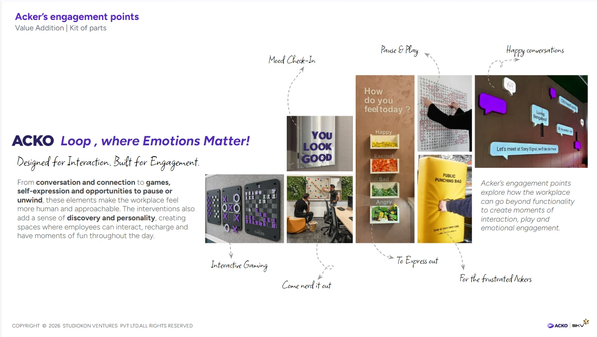

Designed for Interaction.
Built for Engagement.
Built for Engagement.
Mood Check-In
Interactive Gaming
Come nerd it out
Pause & Play
To Express out
For the frustrated Ackers
Happy conversations
Feel itcheck in, let it out
Mood Check-In
To Express out
For the frustrated Ackers
Play itpause, nerd out, play
Interactive Gaming
Come nerd it out
Pause & Play
Share ittalk, laugh, connect
Happy conversations
Acker’s engagement pointsValue Addition | Kit of parts
Copyright © 2026 Studiokon Ventures Pvt Ltd. All rights reserved